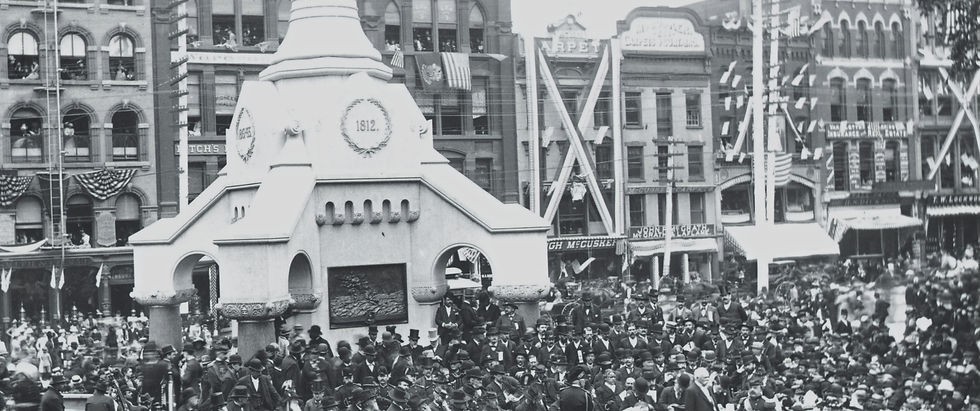
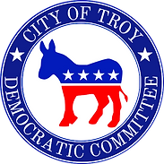

October 29, 2026 | Troy City Council
The clerk's minutes for the General Services Committee were not yet published as of November 4, 2026. Proceedings below are from the meeting recording, which begins partway into the mayor's opening remarks, so the call to order and roll call were not captured. Neither session took votes other than motions to adjourn.
The council spent about an hour questioning the U.S. Department of Agriculture (USDA) official who would run Troy's winter crow dispersal program, one week before the contract comes up for final adoption. Council members asked how loud the pyrotechnics are, how residents will be warned, and whether anyone has checked that Troy has a crow problem this year. In the 2027 water and sewer budget hearing that followed, the administration confirmed it is proposing a 10.1 percent water rate increase and about 7.6 percent for sewer.
At the same time, the transfer of water fund surplus to the general fund would grow 32 percent, to about $2.48 million, and Council Member Greg Campbell-Cohen said that if the water fund has that much surplus, he doesn't see why rates need to rise. Asked by Council President Sue Steele, city staff named five neighboring communities that pay less for Troy water than Troy residents do.
General Services Committee, chaired by Council Member Jona Favreau. Scheduled for 5:30 p.m. Present: Council Members Favreau, Phil DiLorenzo, Greg Campbell-Cohen, Kathleen Spain-McLaren, Noreen McKee, and Council President Steele. Council Member Shikole Struber was absent, and the chair read her questions into the record. In attendance: Mayor Carmella Mantello and Ken Presser, district supervisor with USDA Wildlife Services. Adjourned on a motion by DiLorenzo, seconded by Spain-McLaren.
The council advanced the agreement, worth up to about $13,450, at the October 22 Finance meeting (Resolution 99). Since then, council members said, emails have poured in on both sides. Mayor Mantello supports the program.
Presser, a 32-year veteran of Wildlife Services, said the agency's first crow program anywhere was in Troy in 1999, when about 25,000 birds roosted here. Crows winter in cities because there is more food, it is slightly warmer, and streetlights help them spot great horned owls, their main predator. Roosts build in November and December and break up on their own in late March. The methods don't harm the birds, Presser said: recorded crow distress calls, spotlights, lasers, and "screamers," a pyrotechnic that sounds like a bottle rocket and lasts about three seconds. The agency doesn't use propane cannons, and Presser said the cannons some residents remember were fired by a college, not the USDA.
Crews would work five nights, plus up to two follow-up nights, from sunset (about 4:30 p.m.) to 9 p.m. The nights would be announced in a press release, police would be notified, and up to three two-person teams would drive marked trucks and wear USDA safety vests. Staff count crows at dawn, before and after the work, from three or four spots in the city, usually starting the first week of December, and the council would get the numbers.
"We cannot control where the crows go. We can control where the crows don't go," Presser said. The goal is wooded areas along the river north and south of the city, and Troy and Watervliet would be treated on the same nights so the birds don't just cross the river. Green Island runs its own program.
The USDA bills monthly for the hours its crews work, up to the contract's cap. Asked by McKee, Presser said Troy has signed these agreements before and used only part of the money. Rochester and Albany are also signed up this year; Utica and Auburn dropped out after their roosts didn't re-form.
Favreau asked about histoplasmosis, a fungal infection linked to droppings on soil, since Troy's roosts sit over pavement. Presser said there is no direct link from droppings to a specific illness, though he "would not want my children playing" in an area covered by them. Asked what residents can do, Presser said to keep dumpsters closed and put trash out the morning of pickup, not the night before.
DiLorenzo said the program first looked like standard procedure to him, but the public response made him take a closer look. He asked whether the results last. They don't, Presser said; it's an annual treatment, "very similar to plowing the snow." DiLorenzo also asked how the city avoids a game of "crow tennis" with Watervliet, and Presser repeated that both cities would be treated at once.
Campbell-Cohen pressed on noise. He said screamers he found online run 100 to 120 decibels and asked whether quieter options exist. Presser didn't have the figures and agreed to send the product safety sheets. Asked whether the city could skip the pyrotechnics, Presser said that hasn't been tried and the screamers are "by far the most effective," since crows get used to lasers and sometimes ignore the distress calls.
Steele asked whether anyone had checked that Troy has a crow problem this year. Presser said no; the agency works by request and hasn't been asked. Steele said her office received no complaints until the mayor went to the press, and that it's now hearing from both sides, including parents of children with special needs who worry about sudden, random noise. She asked how the city would warn people beyond a press release and a Facebook post. Presser said the press release has been the method since 1999 and the agency is working with local news outlets.
Struber sent two questions through the chair: whether any program draws crows to new locations instead of driving them off, and what good crows do. Presser said crows are scavengers that clean up dead animals, and the trouble comes only at large numbers.
The contract is expected on the November 5 Regular Meeting agenda for final adoption.
Public Utilities Committee, chaired by Council Member Campbell-Cohen. Opened with the Pledge of Allegiance after a short break. In attendance: Mayor Mantello, Deputy Mayor Seamus Donnelly, Comptroller Michael McNeff, Department of Public Utilities (DPU) Director Chris Arzoumanian, Andrew Golden of DPU, and DPU staff member Christine. Adjourned by voice vote.
Campbell-Cohen opened by putting the numbers on the record. The proposed 2027 water rate is $5.43 per thousand gallons, up from $4.93, a 10.1 percent increase. That follows 8.8 percent this year and 2.3 percent the year before. The proposed sewer rate is $4.27, up about 7.6 percent and about 32 percent higher than in 2025.
McNeff said rates rise because expenses rise: salaries, benefits, and chemicals. In the proposed 2027 budget, the Water Fund grows about $1.55 million. About $1.48 million of that is larger payments to the general fund. Treatment chemicals add about $280,000, and salary lines fall because unfilled jobs are budgeted as savings.
The mayor, who took office in January 2024, blamed past administrations for notices of violation from the state Department of Environmental Conservation (DEC) on sludge, the Eddy's Lane pump station, corrosion control, and low-hazard dams.
The sharpest exchange of the night was over how much water money leaves the water fund. Water and sewer are enterprise funds, meant to run like a business, with rates set to cover the cost of service. The general fund pays for police, fire, City Hall, and most other services, mostly from property taxes. Three lines move water money into the general fund in 2027.
| Line | 2027 Proposed | Change |
|---|---|---|
| Payment for "assumed taxes" on water plant property, similar to a payment in lieu of taxes (PILOT) | $705,902 | No change |
| Charge for general fund services to the water fund (payroll, treasurer, administration) | $1,737,005 | Up 70.2% from 2026, up 94.1% from 2025 |
| Transfer of water fund surplus to the general fund | $2,479,837 | Up 32.4% from $1,873,000 in 2026; $1,475,000 for years before that |
Figures as read at the hearing. The proposed budget doesn't agree with itself on the surplus transfer: the Water Fund pages budget $2,054,837, while the general fund's revenue page expects $2,479,837, a $425,000 gap. At the October 22 hearing, McNeff called a related mismatch an upload error.
Donnelly said the service charge reflects work general fund staff do for DPU, from payroll to collecting water bills. Campbell-Cohen asked for a department-by-department breakdown, and the administration agreed to provide it. The sewer fund is charged the same way.
On the surplus transfer, Donnelly said the general fund is entitled to a utility's profit as long as the transfer never dips into the water fund's reserves. Campbell-Cohen said that if the water fund has that much surplus, he doesn't see why rates need to rise. He noted he had objected to the transfer under the previous administration too, and said this administration has added about $1 million to it in two years. McNeff agreed the numbers show that.
Donnelly said cutting the transfer would open a $2.4 million hole, meaning higher property taxes or $2.4 million less in services. A council member said it looks like raising money "on the backs of" ratepayers to stay under the tax cap. Campbell-Cohen argued that once water rates fund the general budget, they work like a property tax, but a regressive one: property taxes are based on what a home is worth, while "we all poop and drink water." He said he pays the minimum bill in his apartment, and the minimum is going up.
Another council member said they would gladly pay 10 percent more as a homeowner if the money went back into Troy's pipes. The mayor answered that the city is investing "tenfold" over past administrations in lead pipe replacement and corrosion control.
Most of that money comes from outside City Hall. Troy's lead pipe program runs on a $12.8 million award from the federal Bipartisan Infrastructure Law, made in 2024 through the state Department of Health and Environmental Facilities Corporation as grants and interest-free loans, and $16.7 million in state and federal funding announced in December 2025, according to the city's own announcements. The mayor's own message in the 2027 proposed budget puts federal and state funding for lead line work since 2024 at about $35 million. Later in the hearing, DPU staff said lead service and corrosion control work is grant-funded.
Campbell-Cohen later noted that DPU is being asked to cut $5,000 from gas, $35,000 from vehicle parts, and $10,000 from repairs while sending an extra $600,000 to the general fund. "Sounds like we actually are squeezing the water fund," he said. DiLorenzo called the garage cuts disappointing given the rate increase.
Troy sells water to neighboring communities under separate contracts, and the 2027 increases for them range from 4 percent to 114 percent. DPU staff said Menands pays a fixed bulk rate that never changes, and its contract is up for renegotiation. Waterford pays a wholesale rate of about $2.33 per thousand gallons with 1.5 percent yearly increases. Some towns pay the city rate, some get yearly inflation adjustments, and North Greenbush pays the city rate plus 15 percent.
Asked by Steele, staff named five communities that pay less than Troy residents: Rensselaer, East Greenbush, Waterford, Halfmoon, and Menands. Donnelly said DPU, the comptroller, and the law department are reviewing every contract, with the goal that no outside community pays less than a Troy resident and that outside rates rise when Troy's do. Some meters measuring water sold to other towns were broken, and the city has been billing on estimates while DPU replaces them. The administration hopes to have new terms in place for the 2028 budget.
The orthophosphate the city adds to the water coats the inside of lead service lines so lead doesn't leach into drinking water. Staff said Troy's latest lead tests came in under 10 parts per billion (ppb), which would meet the stricter federal action level of 10 ppb that is scheduled to take effect November 1, 2027 (down from 15). Campbell-Cohen said Troy was near 40 at one point, and he asked the administration to change "eradicate" to "mitigate" in its budget letter. He also said residents have noticed the water no longer smells of chlorine.
The city hasn't published results that back up the "under 10" figure. Its most recent annual drinking water quality report, for 2024, says Troy was in violation of state lead rules that year. The 90th percentile lead level was 22.9 ppb in the first half of 2024 and 34.7 ppb in the second half, when 25 of the 69 homes tested were over the action level. As of November 4, 2026, the city's online archive lists no 2025 report.
All water treatment chemical contracts go out to bid for 2027, and vendors expect small increases. Staff don't expect orthophosphate use to drop as lead lines come out. Purification consulting drops from $80,000 to $6,600, and transmission consulting from $150,000 to $100,000, because engineering is now paid from capital accounts and grants. DPU has engineering planning grants for stormwater permits, combined sewer overflows (where storm runoff and sewage share pipes), and cybersecurity.
A consultant is still the licensed water plant operator. Spain-McLaren asked to bring that job back in-house, and Arzoumanian said that's the plan. The budget also carries $25,000 for new pump bearings at the Eddy's Lane pump station, separate from the $500,000 in the capital plan.
Several DPU positions are funded but deferred. At the water plant, a laborer, a water lab technician, and two maintenance assistants are deferred to the end of 2027. Four transmission positions are also deferred to year's end, and a principal account clerk to April 1. Arzoumanian said he is reviewing whether some jobs are still needed, such as having plant operators take on maintenance duties, and proposed a temporary groundskeeper for the plant.
DPU's senior auto mechanic job is vacant, with one applicant so far. In the meantime, a DPU mechanic's helper works at the central garage, and the Department of Public Works (DPW) head mechanic receives premium pay from the water fund for servicing DPU vehicles. Campbell-Cohen asked why the general fund bills the water fund for shared services but nothing flows the other way when DPU staff work on DPW trucks. The administration's answers about who services which vehicles conflicted, and the question was left unresolved.
Staff said it is very hard to hire people with commercial driver's licenses (CDLs), especially for sewer work. Donnelly said the city proposed paying for CDL training and adding a pay step for licensed drivers in its contract talks with the Civil Service Employees Association (CSEA), but the union rejected it. The three-year CSEA agreement the mayor announced in September 2025 lists raises, clothing and boot allowances, and longevity pay among its terms, with nothing on CDL training or pay.
DPU sometimes rents a large excavator and trench box for deep sewer collapses its backhoes can't reach safely, which is why equipment rentals rise $15,000. The sewer consulting line stays flat to pay for the camera inspections and engineering reports the DEC requires. Staff said many of the city's sewer pipes date from the 1880s to 1910, and "the more you look, the more you're going to find."
Spain-McLaren asked about leaf-clogged storm drains. Staff said Troy has more than 4,100 catch basins, along with 3,000 manholes and 1,650 hydrants. DPU and the street crews have a priority list and started cleaning on the north end. Residents can report a clogged drain through the online reporter on the city website.
Campbell-Cohen asked about the ordinance the mayor signed May 7 updating DPU rules and changing billing for some properties. Staff weren't sure the amendments were ever posted online. The mayor said she would check with the corporation counsel and report back. "It is law," Campbell-Cohen said.
Donnelly said Fifth Avenue was left off this year's paving list because its water main breaks often. In 2027 the city plans to replace the full main from Ferry Street to Hill Street before repaving.
Campbell-Cohen asked for a check-in about six months before next year's budget to discuss changes such as clearer line names. Line 421, labeled "services from other," holds the sewer fund's contribution to the general fund.
The council thanked DPU staff and crews by name. Campbell-Cohen said he couldn't remember a time when residents thought so highly of Troy's water service.
← Back to Meeting Archive